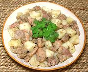

|
Chicken with OnionPuerto Rico - Pollo Encebollado | ||||
| Serves: Effort: Sched: DoAhead: |
2 main *** 1 hr Yes |
A very flavorful, easy to make chicken dish. In Puerto Rico, it is normally made with bone-in skin-on chicken parts, but for buffet service, it is more practical as given here. You can do it either way. | |||
|
14 8 14 ------ 1 2 3/4 1-1/4 1 1/4 ------ 1/2 1 1 |
oz oz oz --- cl t t t t --- c T |
Chicken (1) Onion Potatoes (2) -- Seasoning Garlic Peppercorns Oregano Salt Olive Oil Vinegar ------------- Stock Bay Leaf Butter |
PREP - (50 minutes (30 min work))
|